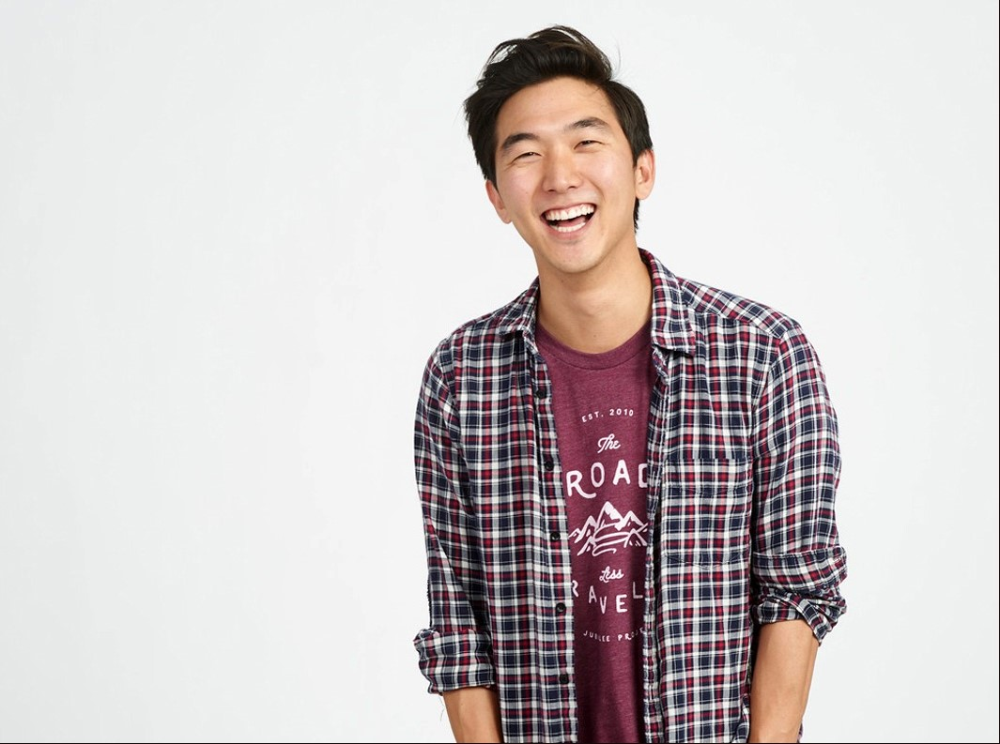

in-between
free pan-Asian mental health conference
discussing Asian wellness. created by and for students.
Washington University in St. Louis / Early April 2023
submit your thoughts on what mental health and wellness means to you here -- submit your thoughts on what mental health and wellness means to you here --
is love a bowl of cut fruit?
how do i balance mental health with grades?
i can achieve way more when i'm less stressed
hey, can i buy someone's meal points
how do i talk to my family about therapy?
what does it mean to be there for someone?
i get plenty of sleep, but i'm always tired. why?
why can't we get village food at BD?
how do i connect with my parents if they don't get the concept of mental health?
i get really nervous for no reason. am i crazy?
what does "making an impact" mean?
#neverforgetHolmesLounge
i told my parents im not pre-med. how do you *think* that conversation went?
what the hell even is mental health??
how do we work towards systemic change?
where can i find a therapist?
ai, anyone got some extra meal points
i'm not Asian... but how can i be an ally?
i'm getting easily triggered nowadays, but i don't wanna be.
i feel like i'm the only one who's this messed up.
i keep doubting myself.
oh no. am i doubting myself? ... wait. shit.
do therapists get paid well?
what does a career in behavioral health look like?
what is behavioral health?
it's stressful not speaking my heritage's native language.
love languages... what were we taught as children?
it's hard to connect with family about my emotions
these discussions are so, so needed.
the news makes me so sad and stressed. how can i do something?
i cry whenever i get emotional, of any sort.
my eating habits have gotten worse due to my stress
i really, really fear losing other people
i miss my friends back home.
is anyone even willing to listen to me?
how do i start unlearning unhealthy behaviors?
less stress = more success
i just need someone who can listen to me.
my problems can't be fixed by a lil therapy session.
doom-scrolled for six hours again. woooooooo
too much pressure. too much pressure.
easter egg! you caught the end of the chain. click here for a cookie
let's talk about Asian mental health.
in-between is a student-led conversation-starter driving dialogue around subjects more stressful than final exams-- examining identities and health.
We've recently felt our Asian identity's increased weight on mental health and holistic wellness. It was hard to de-tangle generations of stigma alone, though, and we never grew up openly discussing our mental health. Hesitantly, in 2019, we asked our Asian peers if they needed these chats too.
2 conferences, 20+ speakers, and 300+ attendees later, we're confidently getting the conversation started.
so, what happens at in-between?
talks.
Hear from passionate, supportive speakers from across the nation. They share their insights and, more importantly, are eager to chat.
Find prior conference schedules, speaker lists, and photos here.
Jason Y. Lee, founder of Jubilee Media
Dr. Mimi Khúc, Georgetown
University, Open in Emergency
Dr. Vania Manipod, Freud&Fashion, @drvaniamanipod

Dr. Han Ren, psychologist, @dr.han.ren

Matthew Diep, Founder of Psypher

Charles Yu, author of Interior Chinatown
meets.
Bump brains with like-minded humans who care about self-care. in-between is a conversation, not a lecture. (we get enough of those.)
Want to help organize in-between? Let's talk!